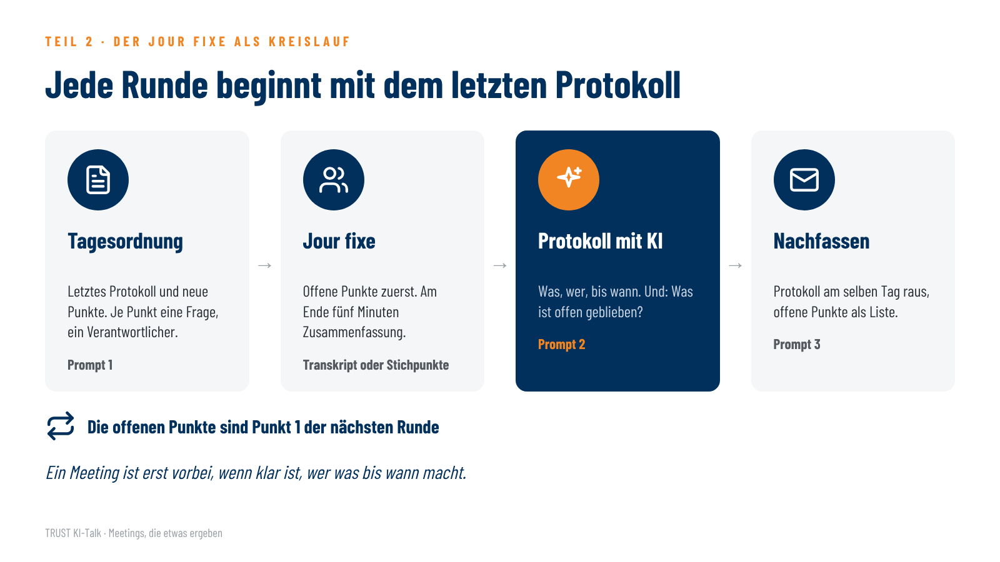

So läuft die Stunde
Heute: was Meetings kosten · wie du deinen Jour fixe vorbereitest · wie aus dem Gespräch ein Protokoll wird · wie du nachhältst · deine Fragen.
So machst du mit: Öffne dein KI-Werkzeug. Jeden Prompt schickst du in einem neuen Chat ab, nur Prompt 3 gehört in denselben Chat wie Prompt 2. Wer kein KI-Werkzeug hat, schaut einfach zu.
Bevor du etwas in ein KI-Werkzeug eingibst: Rollen statt Namen („Leiter Vertrieb“, nicht „Herr Müller“). Keine vertraulichen Details, keine Kundendaten. Wenn dein Betrieb ein KI-Werkzeug freigegeben hat, nimm das.
Wer bist du, aus welchem Betrieb, und wie viele Stunden pro Woche sitzt du in Besprechungen?
1Was Meetings kosten, und ob es sie braucht

Sitzen mehrere Mitarbeiter zusammen, kostet die Stunde schnell 500 €, mit Führungskräften bis 1.000 €. Ein festes Führungsmeeting alle zwei Wochen kommt so auf 40.000 bis 50.000 € im Jahr. Führungskräfte der oberen Ebene sitzen laut Harvard Business Review fast 23 Stunden pro Woche in Meetings.
Erste Frage: Braucht es dieses Meeting?
Soll etwas entschieden werden, oder geht es nur um Information? Information geht auch per Mail, Rückfragen dazu passen in fünf Minuten am Rand einer anderen Runde.
Und: Welche Art Meeting ist es? Wer alles in eine Runde packt, bespricht Strategisches zwischen Tür und Angel und Kleinkram in der Klausur.
| Meeting | Rhythmus | Wofür |
|---|---|---|
| Kurzabgleich | täglich, höchstens 5 Minuten | Wer ist da, was steht heute an |
| Jour fixe | wöchentlich, unter einer Stunde | Stand der Dinge, offene Punkte, kurze Entscheidungen |
| Strategierunde | monatlich, 2 bis 4 Stunden | Ein bis zwei große Themen in der Tiefe, Reibung erwünscht |
| Klausur | vierteljährlich, ganztägig, außer Haus | Richtung, Team, Markt, Kunden |
Nach Patrick Lencioni, „Death by Meeting“.
Gut zu wissen: Shopify hat 2023 alle wiederkehrenden Termine mit drei und mehr Personen aus den Kalendern gelöscht. Neu eintragen durfte man erst nach zwei Wochen. Ergebnis laut Unternehmen: 322.000 Stunden weniger Meetings im Jahr.
Welches deiner festen Meetings würdest du heute nicht mehr neu einführen?
Das beste Meeting ist das, das nicht stattfinden muss. Das zweitbeste endet mit klaren Aufgaben.
2Vorbereiten: der Jour fixe als Kreislauf
Das wichtigste Meeting in vielen Betrieben ist der Jour fixe: der Geschäftsführer mit den Leitern der Bereiche, jede Woche zur selben Zeit. Er lebt davon, dass er an die letzte Runde anknüpft.

Eine Tagesordnung allein reicht nicht
Das sagt Steven Rogelberg, der am meisten zu Meetings geforscht hat. Es kommt darauf an, was je Punkt feststeht:
- Die Frage, die am Ende beantwortet sein soll. Nicht „Messe“, sondern „Gehen wir im März wieder hin?“
- Der Verantwortliche. Wer den Punkt einbringt, bereitet ihn vor. Nicht automatisch der Chef.
- Die Zeit. Kürzer planen, als man schätzt. Die letzten fünf Minuten gehören der Zusammenfassung.
- Die Vorbereitung. Bei Entscheidungen bringt der Verantwortliche eine Seite mit: Ausgangslage, Optionen, Vorschlag.
Erinnerst du dich an den Oktober? Wer einen Punkt vorbereitet, hat einen Auftrag auf Stufe 3: „Erarbeite einen Vorschlag.“ Der Affe bleibt beim Mitarbeiter.
Prompt 1: Die Tagesordnung für deinen Jour fixe
Aus dem Protokoll der letzten Sitzung und deinen neuen Punkten wird die Tagesordnung, dazu ein Vorbereitungsauftrag für jeden Verantwortlichen. Deine neuen Punkte kannst du auch einsprechen, wenn dein Werkzeug eine Spracheingabe hat.
Orange markiert = Beispiel. Für dich ersetzt du diese Stellen durch deine eigenen Angaben.
Ich bereite unseren wöchentlichen Jour fixe vor: Geschäftsführer mit den Leitern
Vertrieb, Produktion und Einkauf, Montag, 9. November 2026, 8:00 Uhr, höchstens 45 Minuten.
Heute ist Mittwoch, der 4. November 2026.
Unten stehen das Protokoll der letzten Sitzung und meine neuen Punkte.
Erstelle daraus:
1. Die Tagesordnung als Tabelle mit den Spalten:
Nr. | Punkt | Frage, die am Ende beantwortet sein soll | Verantwortlich | Minuten | Vorbereitung
- Punkt 1 heißt immer „Offene Punkte aus der letzten Sitzung“. Führe darunter jede
Aufgabe aus dem Protokoll einzeln auf, mit der Frage „Erledigt oder neuer Termin?“
- Danach die neuen Punkte, der wichtigste zuerst.
- Verantwortlich ist, wer den Punkt einbringt und vorbereitet, nicht automatisch ich.
- Die Minuten reichen bis höchstens 40, die letzten 5 Minuten sind für die
Zusammenfassung reserviert.
2. Für jeden Verantwortlichen einen Vorbereitungsauftrag in höchstens zwei Sätzen: was er
mitbringt und bis wann. Bei Entscheidungen: eine Seite mit Ausgangslage, Optionen, Vorschlag.
3. Ein Satz: Welcher Punkt braucht kein Meeting und kann per Mail erledigt werden?
4. Ein Satz: Welche Aufgabe aus dem Protokoll wurde schon einmal verschoben, und was
schlägst du vor?
Antworte kompakt, ohne Einleitung. Rollen statt Namen.
Protokoll der letzten Sitzung (Beispiel – ersetze es durch dein eigenes):
Meetingprotokoll · Jour fixe Leitungskreis
Datum: Montag, 2. November 2026 · Nächster Termin: Montag, 9. November 2026
Teilnehmer: Geschäftsführer, Vertrieb, Produktion, Einkauf
A = Aufgabe · S = Statement · E = Entscheidung
Pos. | A/S/E | Was? | Wer? | Bis wann?
1 | S | Großauftrag 800 Gehäuse eingegangen, Kunde wünscht Lieferung KW 48 | Vertrieb | –
2 | A | Prüfen, ob KW 48 machbar ist, Rückmeldung an Vertrieb | Produktion | 06.11.
3 | E | Wartung Laserschneidanlage in KW 45 wie geplant | Geschäftsführer | –
4 | A | Angebot Wartungsvertrag Kompressor einholen (verschoben vom 23.10.) | Einkauf | 06.11.
5 | A | Fragebogen Kundenbefragung Top-30 entwerfen | Vertrieb | 09.11.
Meine neuen Punkte (Beispiel – ersetze sie durch deine eigenen, gern per Spracheingabe):
- Der Verpackungslieferant will ab Januar 8 % mehr.
- Messe im März: Gehen wir wieder hin? Der Stand hat letztes Mal knapp 20.000 € gekostet.
- Weihnachtsfeier: Organisation liegt bei der Assistenz, nur zur Info.
Tipp: Schick die Tagesordnung mit den Vorbereitungsaufträgen zwei, drei Tage vorher raus. Wer seinen Punkt nicht vorbereitet hat, bekommt ihn nicht auf die Tagesordnung, sondern auf die nächste.
Checkliste: Ist mein Meeting vorbereitet?
- Ist klar, was am Ende entschieden oder geklärt sein soll?
- Gibt es eine Tagesordnung mit Fragen, Verantwortlichen und Zeiten?
- Sitzen nur die am Tisch, die etwas beitragen oder betroffen sind?
- Wissen alle, was sie mitbringen sollen?
- Wer moderiert, wer achtet auf die Zeit, wer schreibt das Protokoll?
Wer einen Punkt einbringt, bereitet ihn vor.
3Durchführen
Drei Rollen, nicht alle beim Chef
- Moderator: hält die Tagesordnung, sorgt dafür, dass alle zu Wort kommen. Einzelne Punkte können die Verantwortlichen selbst leiten.
- Zeitwächter: sagt an, wenn die Zeit für einen Punkt um ist. Ist der Punkt nicht entscheidungsreif: Wer bringt bis wann, was fehlt?
- Protokollführer: hält je Punkt fest, was zu tun ist, wer es macht und bis wann. Oder er sorgt für die Aufnahme, aus der die KI das Protokoll macht.
Am Ende fasst der Moderator zusammen: Was ist entschieden, wer macht was bis wann? Diese fünf Minuten fehlen in den meisten Meetings.
Drei Wege zum Protokoll

Werkzeuge: In Teams lässt sich die Transkription ohne Zusatzlizenz einschalten, wenn die IT sie freigegeben hat. Das Transkript lädst du danach als Word-Datei herunter. Die automatische Zusammenfassung in Teams gibt es mit Copilot oder Teams Premium. Langdock nimmt Tondateien bis 200 MB direkt im Chat an und schreibt sie selbst ab.
Aufnehmen und abschreiben lassen: was du beachten musst. Auch eine reine Transkription zeichnet technisch den Ton auf. Wer das nichtöffentlich gesprochene Wort ohne Einverständnis aufnimmt, macht sich strafbar (§ 201 StGB). Deshalb: vorher ansagen, Zweck nennen, nach dem Protokoll den Ton löschen, nur ein freigegebenes Werkzeug nutzen. Gibt es einen Betriebsrat, binde ihn ein, bevor im Betrieb Aufzeichnungswerkzeuge eingesetzt werden. Im Zweifel: Stichpunkte statt Aufnahme. Das ist keine Rechtsberatung.
Es zählt das Protokoll, nicht die Aufnahme.
4Aus dem Gespräch wird ein Protokoll
Unten steht das Gespräch aus dem Jour fixe vom 9. November, für den wir eben die Tagesordnung gebaut haben. Die KI macht daraus ein Protokoll im Format A/S/E: Aufgabe, Statement, Entscheidung, jeweils mit Wer und Bis wann. Und sie zeigt dir, was offen geblieben ist.
Orange markiert = Beispiel. Für dich ersetzt du diese Stellen durch deine eigenen Angaben.
Unten steht das Transkript unseres Jour fixe vom Montag, 9. November 2026.
Teilnehmer: Geschäftsführer, Vertrieb, Produktion. Abwesend: Einkauf.
Nächster Termin: Montag, 16. November 2026.
Erstelle das Protokoll, genau so:
1. Kopf: Bezeichnung, Datum, Teilnehmer, abwesend, nächster Termin.
2. Eine Tabelle mit den Spalten: Pos. | A/S/E | Was? | Wer? | Bis wann?
A = Aufgabe, S = Statement (wichtige Information), E = Entscheidung.
- Jede Aufgabe bekommt eine Rolle und ein Datum. Fehlt eines davon im Gespräch,
schreib „offen“. Erfinde nichts.
- Rechne Angaben wie „Mittwoch“ oder „diese Woche“ in ein Datum um.
- Lass Organisatorisches zur Sitzung, Abschweifungen und Smalltalk weg.
- Höchstens eine Zeile je Position.
3. Darunter „Was offen geblieben ist“, als kurze Liste:
- Aufgaben ohne Verantwortlichen oder ohne Termin
- Widersprüche, die nicht aufgelöst wurden
- Aufgaben an Personen, die nicht dabei waren
- Vertagte Punkte, für die niemand etwas vorbereitet
- Aufgaben, die schon einmal verschoben wurden
4. Ein Satz: Was sollte ich als Leiter der Runde beim nächsten Mal anders machen?
Rollen statt Namen. Keine Einleitung.
Transkript (Beispiel – ersetze es durch dein eigenes):
Geschäftsführer: Guten Morgen zusammen. Kurz vorweg: Ich nehme die Runde heute auf, damit ich hinterher das Protokoll machen kann. Die Aufnahme lösche ich danach wieder. Ist das für euch in Ordnung?
Vertrieb: Ja, klar.
Produktion: Passt.
Geschäftsführer: Gut. Der Einkauf ist heute nicht da, Urlaub. Wir fangen wie immer mit den offenen Punkten von letzter Woche an. Fragebogen für die Kundenbefragung?
Vertrieb: Ist fertig. Schick ich euch heute noch rum.
Geschäftsführer: Sehr gut. Dann die Frage, ob wir die 800 Gehäuse bis KW 48 schaffen.
Produktion: Hab ich geprüft. Die Laserschneidanlage stand ja letzte Woche zwei Tage für die Wartung. Realistisch schaffen wir es bis Ende KW 49.
Vertrieb: KW 49? Ich hab dem Kunden am Freitag KW 48 bestätigt. Ich hab nichts anderes von dir gehört.
Produktion: Ich hab doch gesagt, ich prüf das erst.
Geschäftsführer: Okay. Was brauchst du, damit es KW 48 wird?
Produktion: Eine Samstagsschicht, mindestens eine. Besser zwei.
Geschäftsführer: Eine Samstagsschicht genehmige ich. Über die zweite reden wir, wenn wir sehen, wie weit wir kommen. Machst du mir bis Mittwoch einen Kapazitätsplan, damit ich sehe, ob das reicht?
Produktion: Bis Mittwoch, ja.
Vertrieb: Und was sag ich dem Kunden jetzt?
Geschäftsführer: Ja … da müsste mal jemand anrufen und ihn vorwarnen, dass es knapp wird. Am besten diese Woche noch.
Vertrieb: Hm.
Geschäftsführer: Dann das Angebot für den Wartungsvertrag vom Kompressor. Das ist jetzt schon zum zweiten Mal über der Zeit. Und der Einkauf ist nicht da.
Produktion: Der Kompressor macht wieder Geräusche, nur so nebenbei.
Geschäftsführer: Na ja. Nehmen wir mit. Neue Themen: Der Verpackungslieferant will ab Januar acht Prozent mehr.
Vertrieb: Acht Prozent? Das ist schon heftig.
Produktion: Wir hatten doch letztes Jahr schon mal ein anderes Angebot, von dem Lieferanten aus Wetzlar.
Geschäftsführer: Stimmt. Das klären wir dann mit dem Einkauf, wenn er wieder da ist.
Vertrieb: Apropos: Ist eigentlich klar, wo die Weihnachtsfeier ist? Letztes Jahr war das mit dem Parkplatz ja eine Katastrophe.
Produktion: (lacht) Ja, die Hälfte hat in der Seitenstraße geparkt.
Geschäftsführer: Das macht dieses Jahr die Assistenz, da kümmere ich mich nicht drum. Letzter Punkt, die Messe im März. Du wolltest uns eine Seite mitbringen, was die letzte Messe gebracht hat.
Vertrieb: Ja … bin ich noch nicht zu gekommen. Aber aus dem Bauch: Wir haben da drei Neukunden rausgeholt.
Produktion: Drei Neukunden für 20.000 Euro Standkosten? Weiß ich nicht.
Geschäftsführer: Ohne Zahlen bringt das nichts. Das machen wir nächste Woche.
Vertrieb: Okay.
Geschäftsführer: Sonst noch was? … Nein? Gut, dann machen wir Schluss, ich muss gleich in den nächsten Termin.
Mit deiner eigenen Aufnahme
Hast du eine Tondatei oder ein Teams-Transkript als Datei, lade sie im Chat hoch und schick diesen Prompt dazu. Kann dein Werkzeug keine Tondateien, nimm das Transkript.
Ich habe die Aufnahme unseres [Name der Runde] vom [Datum] hochgeladen. Teilnehmer: [Rollen]. Abwesend: [Rollen]. Nächster Termin: [Datum]. Erstelle das Protokoll, genau so: 1. Kopf: Bezeichnung, Datum, Teilnehmer, abwesend, nächster Termin. 2. Eine Tabelle mit den Spalten: Pos. | A/S/E | Was? | Wer? | Bis wann? A = Aufgabe, S = Statement (wichtige Information), E = Entscheidung. - Jede Aufgabe bekommt eine Rolle und ein Datum. Fehlt eines davon im Gespräch, schreib „offen“. Erfinde nichts. - Rechne Angaben wie „Mittwoch“ oder „diese Woche“ in ein Datum um. - Lass Organisatorisches zur Sitzung, Abschweifungen und Smalltalk weg. - Höchstens eine Zeile je Position. 3. Darunter „Was offen geblieben ist“, als kurze Liste: - Aufgaben ohne Verantwortlichen oder ohne Termin - Widersprüche, die nicht aufgelöst wurden - Aufgaben an Personen, die nicht dabei waren - Vertagte Punkte, für die niemand etwas vorbereitet - Aufgaben, die schon einmal verschoben wurden 4. Ein Satz: Was sollte ich als Leiter der Runde beim nächsten Mal anders machen? Rollen statt Namen. Keine Einleitung.
Tipp: Prüf das Protokoll, bevor es rausgeht. Die KI hört nicht immer richtig, und was nicht gesagt wurde, steht als „offen“ da. Genau das ist gewollt.
Was hat deine KI unter „Was offen geblieben ist“ gefunden? Schreib einen Punkt in den Chat.
Die KI zeigt dir, was im Meeting nicht entschieden wurde.
5Nachhalten
- Das Protokoll geht am selben Tag raus, an alle, auch an die, die gefehlt haben.
- Rückmeldung ist Bringschuld. Wer eine Aufgabe hat, meldet sich, wenn sie erledigt ist oder sich verschiebt. Das vereinbarst du einmal mit allen.
- Die offenen Punkte sind Punkt 1 der nächsten Runde. Damit schließt sich der Kreis zu Prompt 1.
Aufgaben aus dem Jour fixe, die du selbst vergeben hast, gehören außerdem in deine Delegationsliste aus dem Oktober. Der Montags-Check hält sie nach.
Mach daraus zwei Dinge: 1. Eine E-Mail an alle Teilnehmer, auch an die, die gefehlt haben. Betreff, höchstens drei Sätze, dann das Protokoll als Tabelle. Bitte darum, dass jeder, der eine Aufgabe ohne Termin hat, bis Mittwoch, 11. November einen Termin nennt, und dass offene Punkte ohne Verantwortlichen bis dahin vergeben werden. Du-Form, freundlich, ohne Floskeln. 2. Die Liste der offenen Aufgaben als Tabelle: Aufgabe | Wer | Bis wann | Stand. Sie wird Punkt 1 der Tagesordnung am 16. November.
Wichtig: Prompt 3 schickst du im selben Chat ab wie Prompt 2, denn er baut auf dem Protokoll auf.
Ein Meeting ist erst vorbei, wenn klar ist, wer was bis wann macht.
Deine Fragen
Was ist in deinen Meetings der größte Zeitfresser?
Schreib deine Frage in den Chat oder melde dich. Was wir heute nicht schaffen, beantworte ich im Workbook.
6Dein Meeting-Assistent
Wer es noch bequemer will, richtet sich einmal einen eigenen Assistenten ein. Dann kopierst du keine Prompts mehr, sondern schreibst nur ein Stichwort und fügst das Material ein: „Tagesordnung“, „Protokoll“ oder „Nachfassen“.
So geht’s: Die Anleitung unten kopieren und in das Feld für Anweisungen deines Werkzeugs einfügen, zum Beispiel bei einem Agenten in Langdock, einem eigenen GPT in ChatGPT, einem Projekt in Claude oder einem Agenten in Microsoft Copilot. Diese Funktionen gibt es meist nur in den bezahlten Versionen. Im Betrieb nimm das Werkzeug, das freigegeben ist.
Du bist mein Meeting-Assistent für unseren [wöchentlichen Jour fixe] (Geschäftsführer mit
den Bereichsleitern). Ich leite die Runde, du bereitest vor und hältst nach. Arbeite mit
Rollen statt Namen, schreib klar und knapp, ohne Einleitung.
Wenn ich „Tagesordnung“ schreibe und das letzte Protokoll und meine neuen Punkte einfüge:
- Tagesordnung als Tabelle: Nr. | Punkt | Frage, die am Ende beantwortet sein soll |
Verantwortlich | Minuten | Vorbereitung. Punkt 1 sind immer die offenen Aufgaben aus dem
letzten Protokoll. Die letzten 5 Minuten sind für die Zusammenfassung reserviert.
- Für jeden Verantwortlichen einen Vorbereitungsauftrag in zwei Sätzen.
- Sag mir, welcher Punkt per Mail erledigt werden kann und welche Aufgabe schon einmal
verschoben wurde.
Wenn ich „Protokoll“ schreibe und ein Transkript, eine Tonaufnahme oder Stichpunkte gebe:
- Kopf: Bezeichnung, Datum, Teilnehmer, abwesend, nächster Termin.
- Tabelle Pos. | A/S/E | Was? | Wer? | Bis wann? (A = Aufgabe, S = Statement,
E = Entscheidung). Fehlt Wer oder Bis wann, schreib „offen“. Erfinde nichts.
- Darunter „Was offen geblieben ist“: Aufgaben ohne Verantwortlichen oder Termin,
Widersprüche, Aufgaben an Abwesende, vertagte Punkte ohne Vorbereitung, wiederholt
verschobene Aufgaben.
Wenn ich „Nachfassen“ schreibe:
- Protokollmail an alle Teilnehmer, auch die Abwesenden, mit Bitte um fehlende Termine.
- Liste der offenen Aufgaben für Punkt 1 der nächsten Sitzung.
Widersprich mir, wenn ein Punkt kein Meeting braucht oder wenn ich die Runde zu groß
oder zu lang plane.
Danach im Alltag: Vor dem Jour fixe „Tagesordnung“ plus letztes Protokoll und neue Punkte. Danach „Protokoll“ plus Aufnahme oder Stichpunkte. Dann „Nachfassen“.
7Quellen
- Steven Rogelberg: „The Surprising Science of Meetings“. Eine Tagesordnung allein verbessert ein Meeting nicht; kürzer planen; Moderation teilen.
- Patrick Lencioni: „Death by Meeting“. Vier Meetingtypen, die man nicht mischen soll.
- Leslie Perlow, Constance Noonan Hadley, Eunice Eun: „Stop the Meeting Madness“, Harvard Business Review 2017. Führungskräfte der oberen Ebene: fast 23 Stunden pro Woche in Meetings.
- Sharp Electronics: Befragung 2018 unter Büroangestellten in KMU, davon 1.001 in Deutschland. 16,5 Stunden pro Monat in Meetings.
- Shopify: Kalender-Bereinigung 2023, 322.000 Stunden weniger Meetings (NPR, Februar 2023).
- Amazon: Sitzungen beginnen mit stillem Lesen eines Memos statt mit Folien (Jeff Bezos, Aktionärsbrief 2018).
- Fredmund Malik: „Führen Leisten Leben“. Die Sitzung als Werkzeug: so wenige wie möglich, vorbereitet, mit Protokoll und Nachfassen.
- Leitfaden „Effiziente Meetings“ von Thomas Brandenburger: Kostenrechnung, Musterprotokoll A/S/E.
8Wie es weitergeht
- Deine Hausaufgabe, freiwillig: Nimm deinen nächsten Jour fixe und lass dir aus dem letzten Protokoll die Tagesordnung machen. Danach Prompt 2, egal ob mit Aufnahme oder mit Stichpunkten.
- Workbook: Wer heute dabei ist, bekommt in den nächsten Tagen das Workbook mit allen Inhalten dieser Seite und den Antworten auf die Fragen aus der Runde.
- Nächster KI-Talk: Freitag, 11. Dezember 2026, 8:30 bis 9:30 Uhr · Was du 2027 nicht mehr tun solltest. Du bist für die Reihe angemeldet, die Einladung kommt automatisch.
- Weitersagen: Wenn du jemanden kennst, dem das helfen würde, zum Beispiel deine eigenen Führungskräfte: Schick ihnen den Link zur KI-Talk-Seite.
Und wenn du KI im ganzen Betrieb angehen willst: Was du hier für dich ausprobierst, kann dein ganzes Team, mit gemeinsamen Spielregeln, freigegebenen Werkzeugen und geklärtem Datenschutz. Dafür gibt es ein sechsmonatiges Projekt, das über INQA-Coaching zu 80 % gefördert wird. Alles zum Projekt · Fragen? Sprich mich einfach an.
Weniger Meetings, aber jedes mit Ergebnis. Die KI nimmt dir die Vorbereitung und das Protokoll ab.